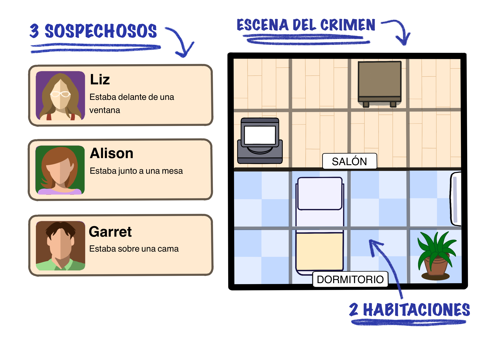
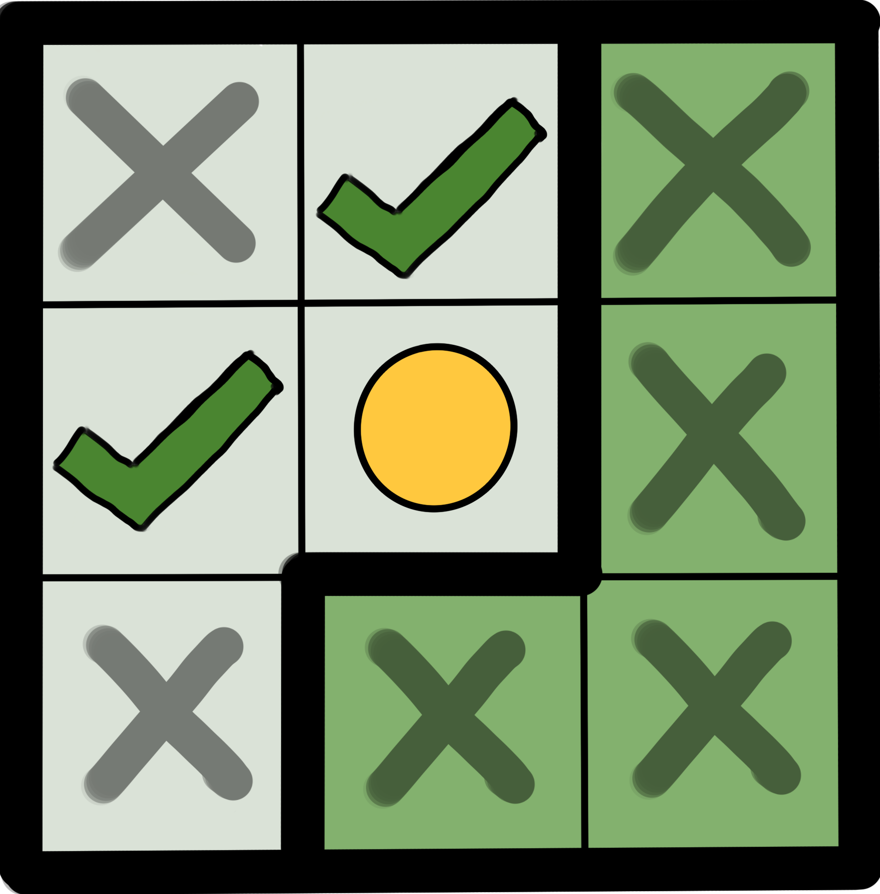
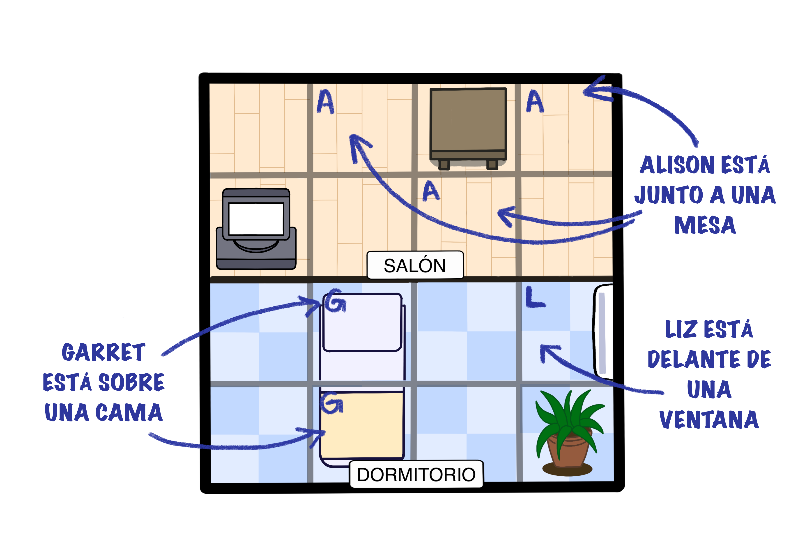
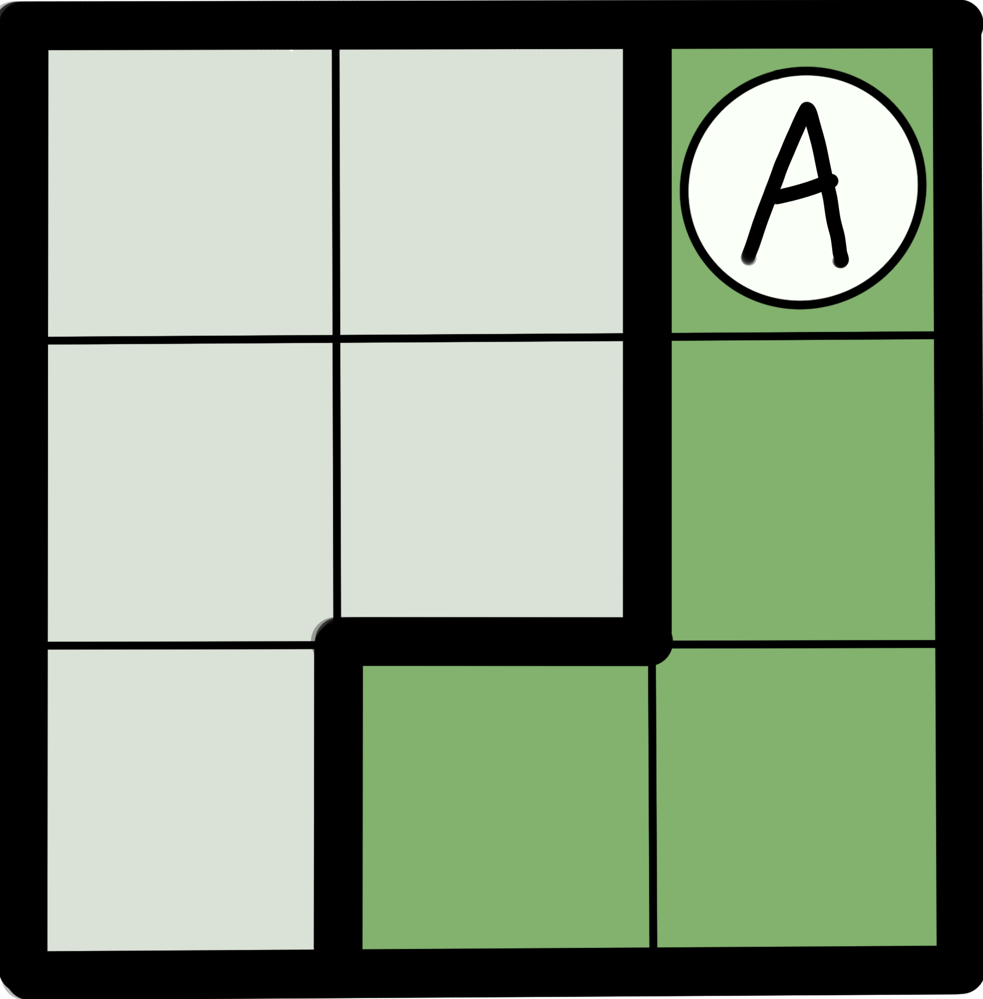
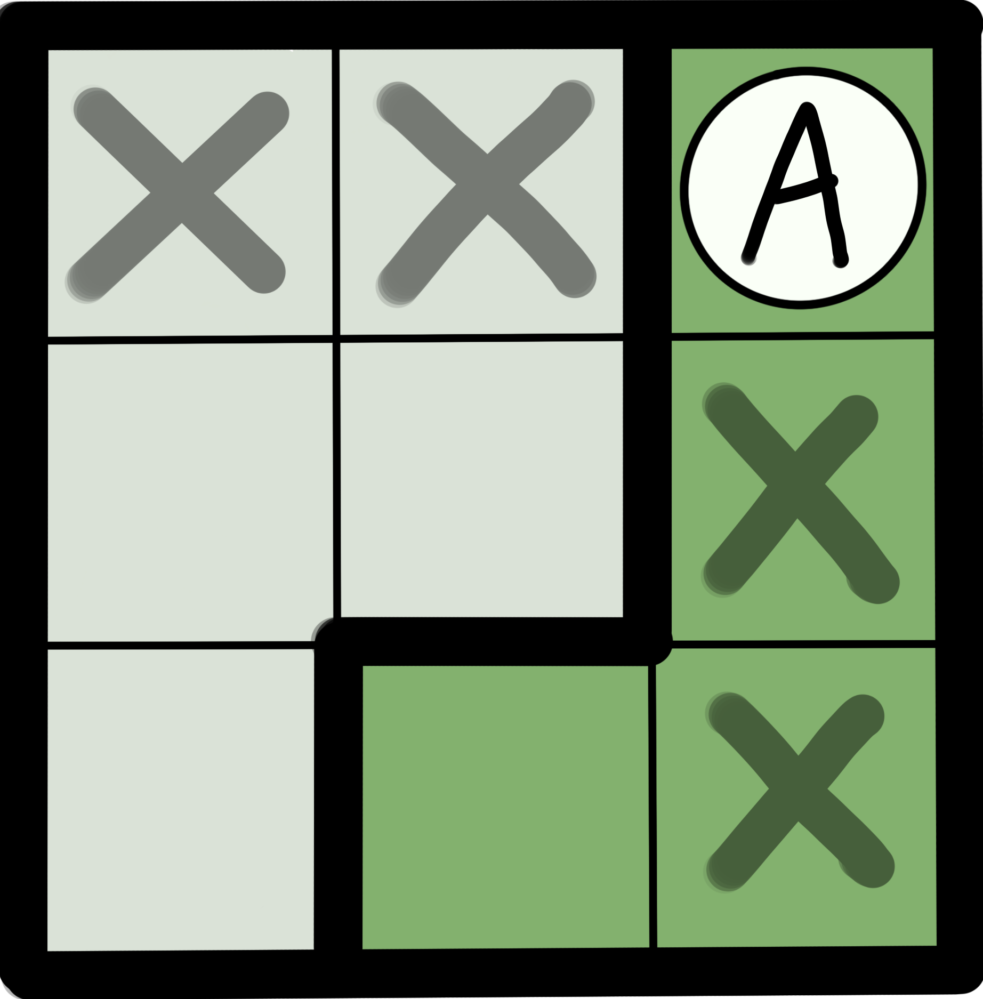
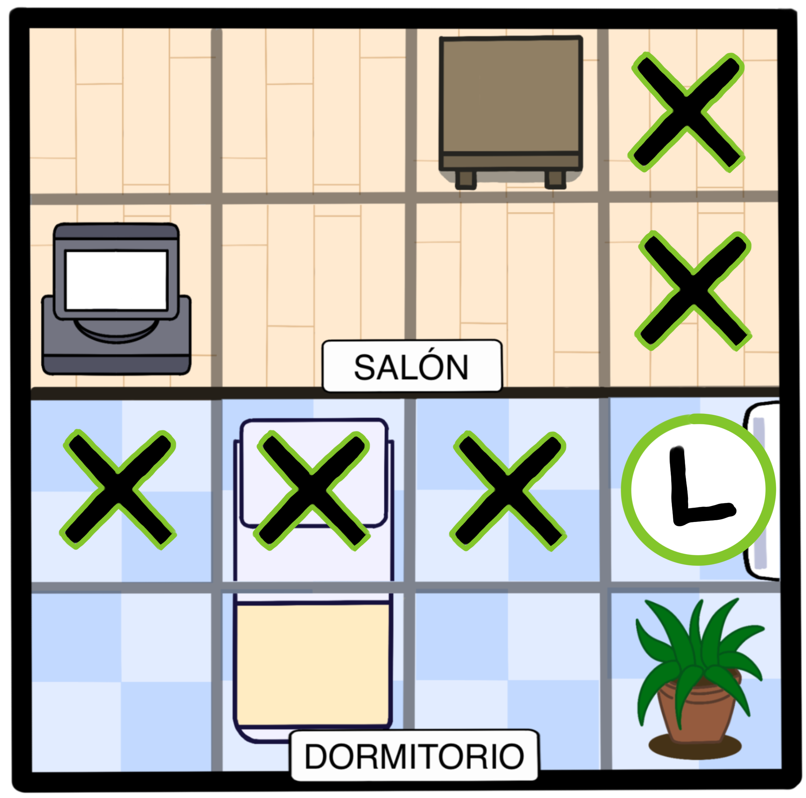
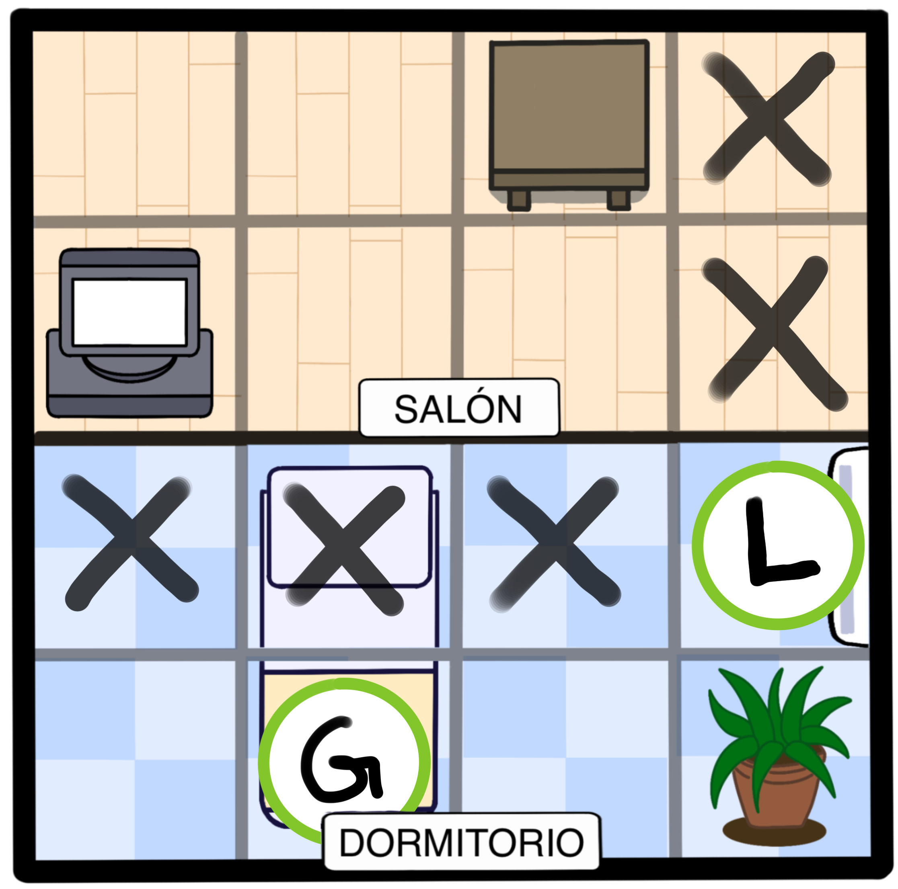
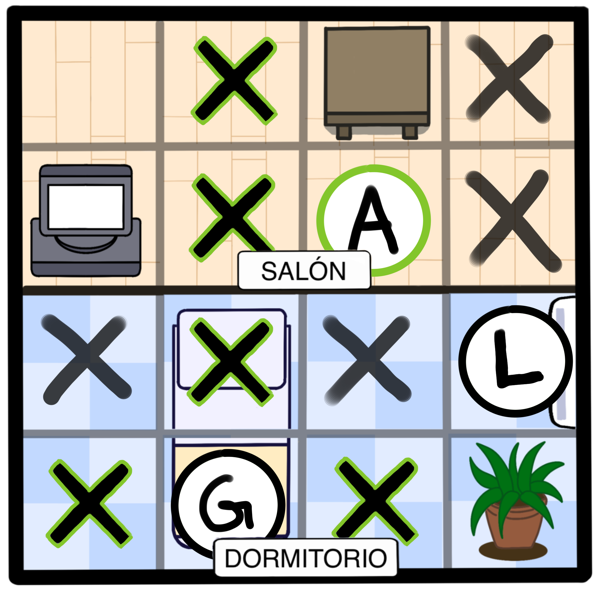
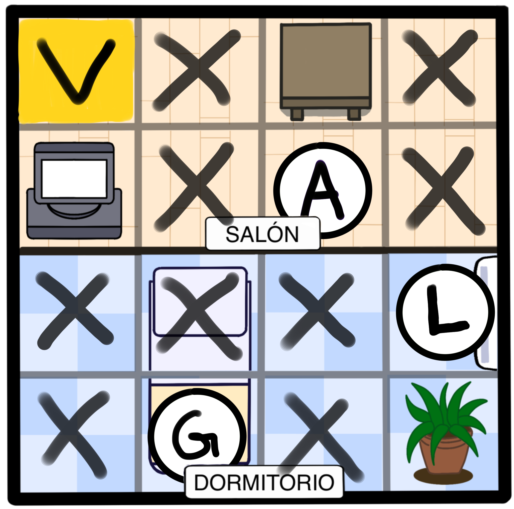
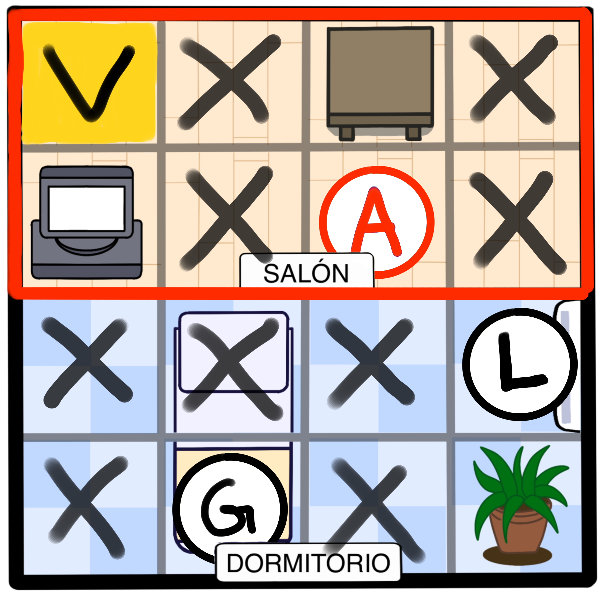

Tu objetivo es identificar al asesino averiguando quién estaba en la misma habitación que la víctima.
Localiza a todos los sospechosos a partir de las pistas y las siguientes reglas:
Aquí tienes un ejemplo. Este caso presenta 3 sospechosos. Hay que colocarlos a todos en esta escena del crimen 4x4 con dos habitaciones.

NOTA: la clave "junto a" quiere decir arriba, abajo, izquierda o derecha de algo, y que está en la misma habitación.

1.Según las pistas, Liz, Alison y Garret pueden estar en cualquiera de estas casillas:

IMPORTANTE! Cada persona estaba en una columna y en una fila diferentes.

Si A está ahí...

...entonces nadie más puede estar en esas casillas.

2. Sólo hay una casilla donde puede estar Liz, así que podemos bloquear el resto de casillas de su fila y columna.

3. Esto nos permite ubicar la posición de Garret en la última casilla de la cama disponible.

4. Despues de hallar a Garret, bloqueamos su fila y su columna. Eso deja solo una casilla junto a la mesa para Alison.

5. La víctima está siempre en la última casilla libre.

La víctima está en la última casilla libre, y Garret estaba en la misma habitación que ella. Por lo tanto, GARRET ES EL ASESINO.